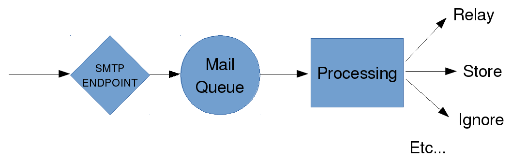
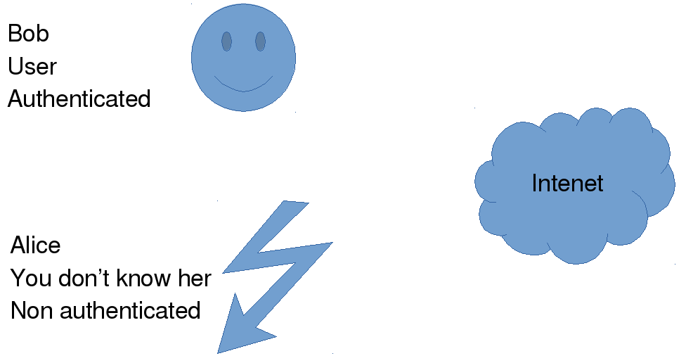
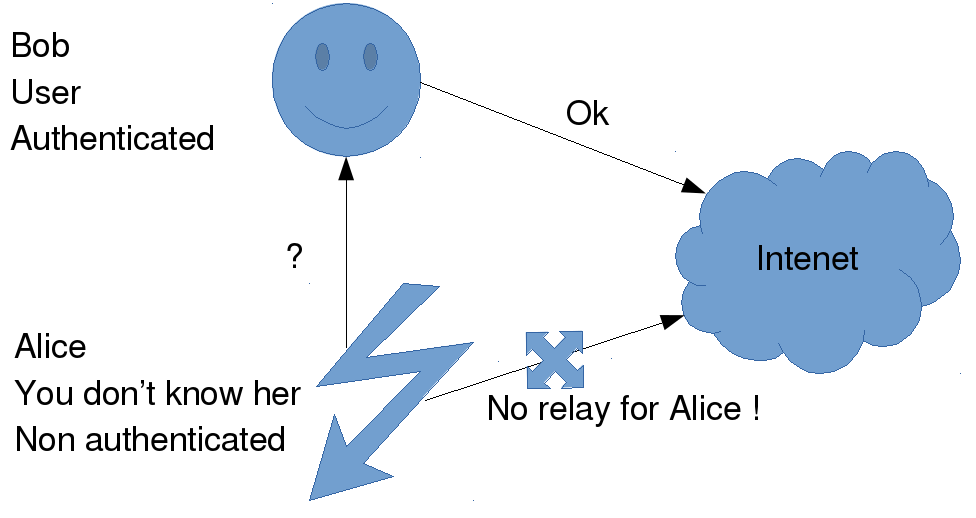

Mail protocols
Speaker : Benoit Tellier
Retrieve this presentation online : https://rawgit.com/Open-Up/openup02_08/master/presentation/index.html
And on GitHub
Objectives
- Present mail protocols
- Configure a postfix server
- Configure mails between two domains
You said mail ?
What is a mail ?
A message sent to me via te internet
I can read it when I want
I can (theorically) send a message to anyone
Mails are based on open standards, and broadly supported
E-mail guts
Return-Path:
Received: from mx2.minet.net ([IPv6:::ffff:192.168.102.26])
by localhost (spam.minet.net [::ffff:192.168.102.97]) (amavisd-new, port 10024)
with ESMTP id Meygb-OHe7nm for ;
Thu, 4 Jun 2015 04:09:10 +0000 (UTC)
MIME-Version: 1.0
From: Murari
Date: Thu, 4 Jun 2015 06:08:41 +0200
Message-ID:
To: General Discussion about Arch Linux
Content-Type: text/plain; charset=UTF-8
Subject: [arch-general] Inkscape fails to open svg files
Precedence: list
Sender: "arch-general"
Hi all,
How are you doing ?
Thanks! Attachments...
Received: from alderaan.linagora.com (smtp.linagora.dc1 [172.16.18.53])
by imap (Cyrus v2.2.13-Debian-2.2.13-19+squeeze3) with LMTPA;
Thu, 18 Jun 2015 12:43:28 +0200
To: btellier@linagora.com
From: Benoit Tellier
Subject: Test message
Message-ID: <5582A0CE.4020801@linagora.com>
Date: Thu, 18 Jun 2015 12:43:26 +0200
MIME-Version: 1.0
Content-Type: multipart/mixed;
boundary="------------030000010109090603040500"
This is a multi-part message in MIME format.
--------------030000010109090603040500
Content-Type: text/plain; charset=utf-8
Content-Transfer-Encoding: 7bit
This mail have a non textual attachment !
--------------030000010109090603040500
Content-Type: application/vnd.oasis.opendocument.text;
name="toto.odt"
Content-Transfer-Encoding: base64
Content-Disposition: attachment;
filename="toto.odt"
UEsDBBQAAAgAAGNV0kZexjIMJwAAACcAAAAIAAAAbWltZXR5cGVhcHBsaWNhdGlvbi92bmQu
b2FzaXMub3BlbmRvY3VtZW50LnRleHRQSwMEFAAACAAAY1XSRnPWCvM4AwAAOAMAABgAAABU
aHVtYm5haWxzL3RodW1ibmFpbC5wbmeJUE5HDQoaCgAAAA1JSERSAAAAxgAAAQAIAwAAAN+D
--------------030000010109090603040500-- How to transport e-mails ?
Using mail protocols !
- To a mail server : SMTP, LMTP
- To the final client : IMAP, POP3, JMAP, etc...
Mail protocols ?
C: hello
S: hello client
C: can I access resource A
S: sure, help yourself- Line by line
- Their own port / own structure
- As opposed to HTTP, can not be handle by the browser
- JMAP
SMTP
Sending messages to a mail server
S: 220 mydomain.tld smtp
C: ehlo yopmail.com
C: mail from:
C: rcpt to:
C: data
S: 250.*
S: 250-PIPELINING
S: 250-ENHANCEDSTATUSCODES
S: 250 8BITMIME
S: 250 2.1.0 Sender OK
S: 250 2.1.5 Recipient OK
S: 354 Ok Send data ending with .
C: subject: test
C:
C: test
C: .
S: 250 2.6.0 Message received STARTTLS, SSL
telnet mail.example.com 25SMTP
SMTP server architecture
SMTP and security
No athentication for interserver communication : you can pretend to be anyone
Spam and Spam relay !
Use of SSL / STARTTLS have to be enforced
Relay management
Relay management
SPF
Sender policy framework
Declare which IPs for a domain can send mails (DNS)
Nothing about content. IP can be spoofed.
DKIM
Domain Keys Identified Mail
Sign a message. Signature can be verified in NS records.
Content signed. Relies on public / private keys.
IMAP
A client retrieves its mails
C: a1 CREATE statustest
S: a1 OK CREATE completed.
C: a003 STATUS statustest (MESSAGES RECENT UIDNEXT UIDVALIDITY UNSEEN)
S: \* STATUS \"statustest\" \(MESSAGES 0 RECENT 0 UIDNEXT \d+ UIDVALIDITY \d+ UNSEEN 0\)
S: a003 OK STATUS completed.
C: A005 APPEND statustest {254+}
C: Date: Mon, 7 Feb 1994 21:52:25 -0800 (PST)
C: From: Fred Foobar
C: Subject: Test 01
C: To: mooch@owatagu.siam.edu
C: Message-Id:
C: MIME-Version: 1.0
C: Content-Type: TEXT/PLAIN; CHARSET=US-ASCII
C:
C: Test 01
C:
S: A005 OK (\[.+\] )?APPEND completed. STARTTLS, SSL
Online storage, flags, mailboxes
SIEVE
Scripts a user can manage to customize behaviour
require "fileinto";
require "body";
if body :text :contains "to match" {
fileinto "INBOX.select";
} else {
fileinto "INBOX.not.selected";
}It is a language, safe
filtering, rejection, replies, vacation, tagging, etc...
Free MTA
Free MTA
- Postfix :
- The one to use
- Simple to configure
- Safe
- Active developpement
Free MTA
- sendmail :
- fossil
- configuration nightmare
- Still developped but not actively
Free MTA
- Exim :
- By default on Debian
- Less used
Free MTA
- qmail :
- No more developped since 1998
- Introduced maildir format
Postfix
apt-get install postfix/etc/postfix/main.cf/etc/postfix/master.cfmaster.cf
# /usr/share/postfix/main.cf.dist
command_directory = /usr/sbin
daemon_directory = /usr/lib/postfix
program_directory = /usr/lib/postfix
smtpd_banner = $myhostname ESMTP $mail_name (Debian/GNU)
setgid_group = postdrop
biff = no
2bounce_notice_recipient = postmaster
# appending .domain is the MUA's job.
append_dot_mydomain = no
myhostname = host.foo.org
mydomain = foo.org
mydestination = $myhostname, localhost.$mydomain $mydomain
myhostname = NomHote.foo.org
myorigin = $mydomain
myorigin = /etc/mailname
alias_maps = hash:/etc/aliases
alias_database = hash:/etc/aliases
# /etc/mailname contain the equivalent of $MYHOSTNAME
mynetworks = 127.0.0.0/8 192.168.0.0/24
mailbox_command = procmail -a "$EXTENSION"
mailbox_size_limit = 0
recipient_delimiter = +
relay_domains = $mydestination
relayhost = $mydomain
smtpd_recipient_restrictions = permit_mynetworks,check_relay_domainspostconf
# display all configuration values
$ postconf
# Those that are different from default value
$ postconf -n
# display specific value
$ postconf message_size_limit
message_size_limit = 10240000
# modify a configuration value
$postconf -e message_size_limit=51200000/etc/postfix/main.cf/etc/postfix/master.cf/etc/aliases
Used for mail redirection
used to generate /etc/aliases.db
# Possible values are
# A mail address (intern or extern)
marketing: marcel, prestataire@example.com
# a mbox name
sales: /srv/archives/sales.mbox
# a command to execute
support: "|/usr/local/bin/ticket support"# Generate /etc/aliases.db
$ newaliases